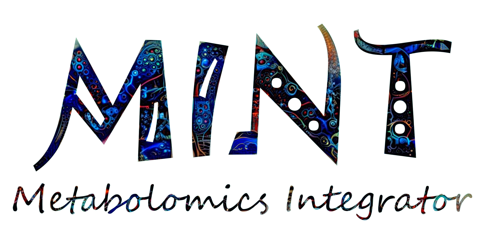
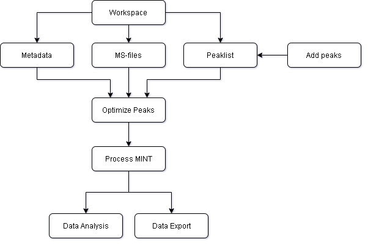

MINT - Metabolomics Integrator
MINT is a post-processing tool for liquid chromatography-mass spectrometry (LCMS) based metabolomics. Metabolomics is the study of all metabolites (small chemical compounds) in a biological sample e.g. from bacteria or a human blood sample. The metabolites can be used to define biomarkers used in medicine to find treatments for diseases or for the development of diagnostic tests or for the identification of pathogens such as methicillin resistant Staphylococcus aureus (MRSA).

Figure 1: Flowchart of MINT processing workflow.
Quickstart
Check out the Quickstart to jump right into it.
What is it all about?
What problem is MINT solving? Check out the background section.
How to use the Python API?
Go to the Jupyter section.